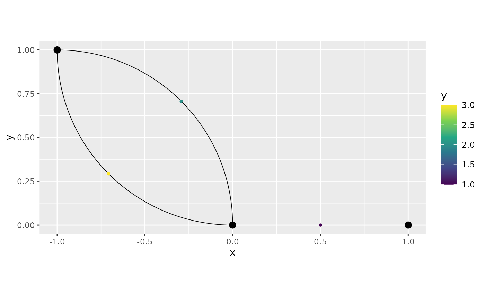

On isotropic covariances on metric graphs with non-Euclidean edges
David Bolin, Alexandre B. Simas, and Jonas Wallin
Created: 2024-02-11. Last modified: 2024-07-07.
Source:vignettes/isotropic_noneuclidean.rmd
isotropic_noneuclidean.rmdIntroduction
In this vignette we will investigate the behavior of isotropic covariance functions (with respect to the resistance metric) on metric graphs with non-Euclidean edges. This boils down to studying the resistance metric on metric graphs with non-Euclidean edges.
More precisely, we will show that when dealing with metric graphs with non-Euclidean edges, the addition or removal of vertices of degree 2 can have a severe impact on the resistance metric and, a fortiori, on the covariance function.
The effect of this study is that if one fits an isotropic model on a metric graph with non-Euclidean edges by turning the observations into vertices, then the resulting model is different from what one would expect. Indeed, the model might change when doing predictions (as one would need to add further observations as vertices to obtain predictions). Furthermore, if one does not add observations as vertices, then the actual covariance function might not be valid @Anderes2020. Actually, in @Anderes2020, such models were not defined, as they only define Gaussian models with isotropic covariance functions for metric graphs with Euclidean edges. One option, therefore, would be to simply not allow one to fit such models at all as they are not consistent. However, in the package we chose to only give a warning, and let the user decide what to do.
A simple example
We start by creating a metric graph with multiple edges. This metric graph does not have Euclidean edges:
edge1 <- rbind(c(0,0),c(1,0))
theta1 <- seq(from=pi/2,to=0,length.out = 50)
theta2 <- seq(from=pi,to=3*pi/2,length.out = 50)
edge2 <- cbind(sin(theta1)-1,cos(theta1))
edge3 <- cbind(sin(theta2),1+ cos(theta2))
edges = list(edge1, edge2, edge3)
graph <- metric_graph$new(edges = edges)
graph$plot()
One can also check if a metric graph has Euclidean edges by calling
the check_euclidean() method, then calling the
summary():
graph$check_euclidean()
summary(graph)
#> A metric graph object with:
#>
#> Vertices:
#> Total: 3
#> Degree 1: 1; Degree 2: 1; Degree 3: 1;
#> With incompatible directions: 2
#>
#> Edges:
#> Total: 3
#> Lengths:
#> Min: 1 ; Max: 1.570729 ; Total: 4.141458
#> Weights:
#> Min: 1 ; Max: 1
#> That are circles: 0
#>
#> Graph units:
#> Vertices unit: None ; Lengths unit: None
#>
#> Longitude and Latitude coordinates: FALSE
#>
#> Some characteristics of the graph:
#> Connected: TRUE
#> Has loops: FALSE
#> Has multiple edges: TRUE
#> Is a tree: FALSE
#> Distance consistent: TRUE
#> Has Euclidean edges: FALSE
#>
#> Computed quantities inside the graph:
#> Laplacian: FALSE ; Geodesic distances: TRUE
#> Resistance distances: FALSE ; Finite element matrices: FALSE
#>
#> Mesh: The graph has no mesh!
#>
#> Data: The graph has no data!
#>
#> Tolerances:
#> vertex-vertex: 0.001
#> vertex-edge: 0.001
#> edge-edge: 0Let us now compute the resistance distances between the vertices
using the compute_resdist() method:
graph$compute_resdist()We can now observe the resistance distances in the
res_dist element of graph:
res_dist_graph <- graph$res_dist[[1]]In reality, what is being actually done to the metric graph, is that one of the edges is, in practice, being ignored. Indeed, let us create a metric graph with Euclidean edges obtained by removing one of the edges, and compute the resistance distance between its vertices. Thus, we start by creating such a metric graph:
edge1 <- rbind(c(0,0),c(1,0))
theta1 <- seq(from=pi/2,to=0,length.out = 50)
edge2 <- cbind(sin(theta1)-1,cos(theta1))
edges2 = list(edge1, edge2)
graph2 <- metric_graph$new(edges = edges2)
graph2$plot()Observe that it has Euclidean edges:
graph2$check_euclidean()
summary(graph2)
#> A metric graph object with:
#>
#> Vertices:
#> Total: 3
#> Degree 1: 2; Degree 2: 1;
#> With incompatible directions: 1
#>
#> Edges:
#> Total: 2
#> Lengths:
#> Min: 1 ; Max: 1.570729 ; Total: 2.570729
#> Weights:
#> Min: 1 ; Max: 1
#> That are circles: 0
#>
#> Graph units:
#> Vertices unit: None ; Lengths unit: None
#>
#> Longitude and Latitude coordinates: FALSE
#>
#> Some characteristics of the graph:
#> Connected: TRUE
#> Has loops: FALSE
#> Has multiple edges: FALSE
#> Is a tree: TRUE
#> Distance consistent: TRUE
#> Has Euclidean edges: TRUE
#>
#> Computed quantities inside the graph:
#> Laplacian: FALSE ; Geodesic distances: TRUE
#> Resistance distances: FALSE ; Finite element matrices: FALSE
#>
#> Mesh: The graph has no mesh!
#>
#> Data: The graph has no data!
#>
#> Tolerances:
#> vertex-vertex: 0.001
#> vertex-edge: 0.001
#> edge-edge: 0Let us now compute the resistance distances:
graph2$compute_resdist()Now, let us compare the resistance distances:
identical(res_dist_graph, graph2$res_dist[[1]])
#> [1] TRUETherefore, indeed, one of the edges is being ignored in practice.
Let us now see what happens when we have observations on both edges, and compute the resistance distances on the resulting metric graph (in which the observations were turned into vertices).
To this end, let us create some observations and add them to
graph:
df_data <- data.frame(edge_number = c(1,2,3), distance_on_edge = c(0.5,0.5,0.5), y = c(1,2,3))
graph$add_observations(data = df_data, normalized = TRUE)
#> Adding observations...
graph$plot(data="y")
Let us now compute the resistance distances between the original
vertices. To this end we will use the compute_resdist()
method with the arguments full=TRUE to compute the
resistance distance at all available locations, and
include_vertices=TRUE to include the original vertices of
the metric graph in the result.
graph$compute_resdist(full=TRUE, include_vertices = TRUE)Since we have 3 vertices, the resistance distances between the original vertices are given by the elements 1 to 3 of the resulting matrix:
res_dist_orig <- graph$res_dist[[1]][1:3,1:3]
res_dist_orig
#> 3 x 3 Matrix of class "dgeMatrix"
#> [,1] [,2] [,3]
#> [1,] 0.0000000 1.000000 0.7853645
#> [2,] 1.0000000 0.000000 1.7853645
#> [3,] 0.7853645 1.785365 0.0000000We can observe that the resistance distances are very different. Thus, the impact of adding observations when computing resistance distances on non-Euclidean metric graphs is severe.
In particular, the impact on the covariance function is severe. For
example, let us consider an exponential covariance function with
sigma=1 and kappa=1:
exp_covariance(res_dist_graph, theta = c(1,1))
#> 3 x 3 Matrix of class "dgeMatrix"
#> [,1] [,2] [,3]
#> [1,] 1.0000000 0.36787944 0.20789356
#> [2,] 0.3678794 1.00000000 0.07647977
#> [3,] 0.2078936 0.07647977 1.00000000and
exp_covariance(res_dist_orig, theta = c(1,1))
#> 3 x 3 Matrix of class "dgeMatrix"
#> [,1] [,2] [,3]
#> [1,] 1.0000000 0.3678794 0.4559535
#> [2,] 0.3678794 1.0000000 0.1677359
#> [3,] 0.4559535 0.1677359 1.0000000This shows that these are two different models. One considering the original metric graph, and another, considering the metric graph with the added observations. Therefore, when one considers a model with isotropic covariance function on a metric graph with non-Euclidean edges to perform statistical analysis, different models are considered in the different stages of the statistical analysis. More precisely, one believes the model being considered only depends on the original vertices of the metric graph, when, in reality, when fitting the model, the resistance distances are computed on a different metric graph that was obtained when the observations were turned into vertices of a new metric graph. Finally, when one does prediction, yet another metric graph will be considered, namely, the metric graph in which the prediction locations were added as vertices of yet another metric graph.
Thus, we do not recommend using isotropic covariance models on metric graphs with non-Euclidean edges, even if the model is capable of being fitted, as there will be several inconsistencies between the original model, the fitted model, and the model used to obtain predictions.
It is important to mention that the same phenomenon occur in the Matérn Gaussian models based on the graph Laplacian. Whenever we want to do prediction, we need to add the observation locations as vertices, thus modifying the graph. This means that there is an inconsistency between the model used to fit the data, and the model used to obtain prediction.